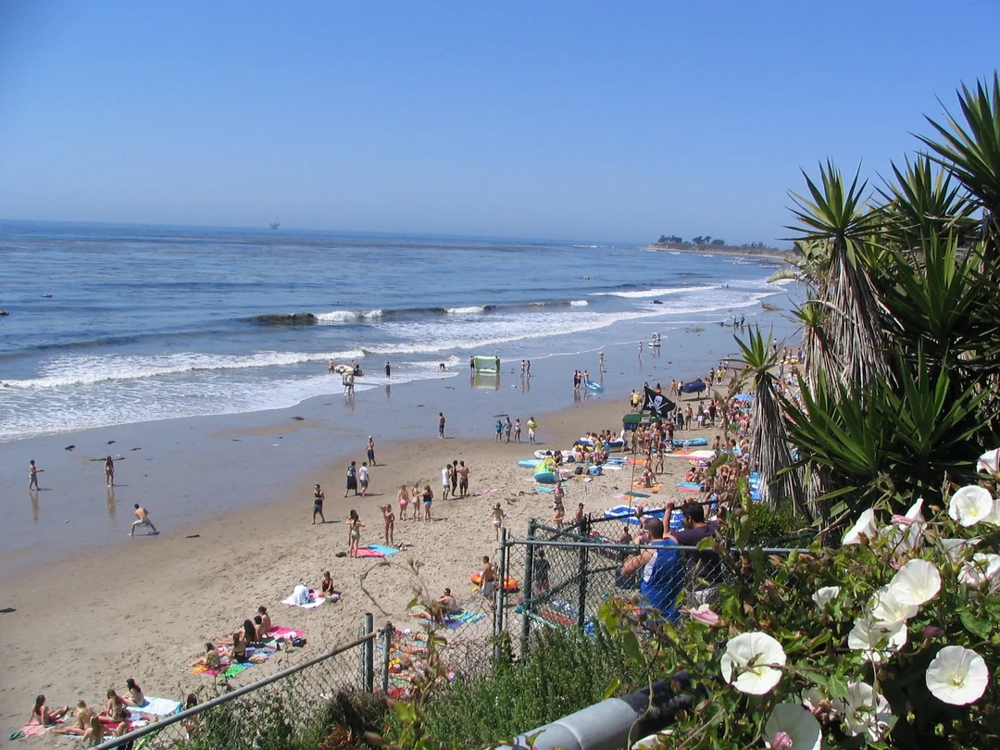

Early 2000s

Image used for the early beach-centered stage of Floatopia.
Student TraditionFloatopia begins as a beach gathering
Floatopia was remembered as a spring beach party in Isla Vista, centered on floating devices, alcohol, music, and the beach space below Del Playa Drive.
Meaning: The event begins as informal student leisure, connected to place, weather, and ocean culture.